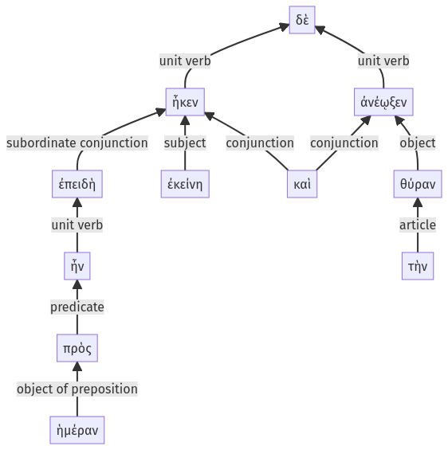

Lysias 1, 1.14.1-1.14.11a
1.13.15-1.13.25a | 1.14.12-1.14.32a
Sentence 31
1.14.1-1.14.11a
ἐπειδὴ δὲ ἦν πρὸς ἡμέραν, ἧκεν ἐκείνη καὶ τὴν θύραν ἀνέῳξεν.
2 ἐπειδὴ ἦν πρὸς ἡμέραν
1 ἧκεν ἐκείνη
1 καὶ τὴν θύραν ἀνέῳξεν
ἐπειδὴ δὲ ἦν πρὸς ἡμέραν, ἧκεν ἐκείνη καὶ τὴν θύραν ἀνέῳξεν.
Highlighting:
- connecting words
- unit verb
- subject
- object
Color code:
- Independent clause (level 1, intransitive verb)
- Independent clause (level 1, transitive verb)
- subordinate clause (level 2, linking verb)
